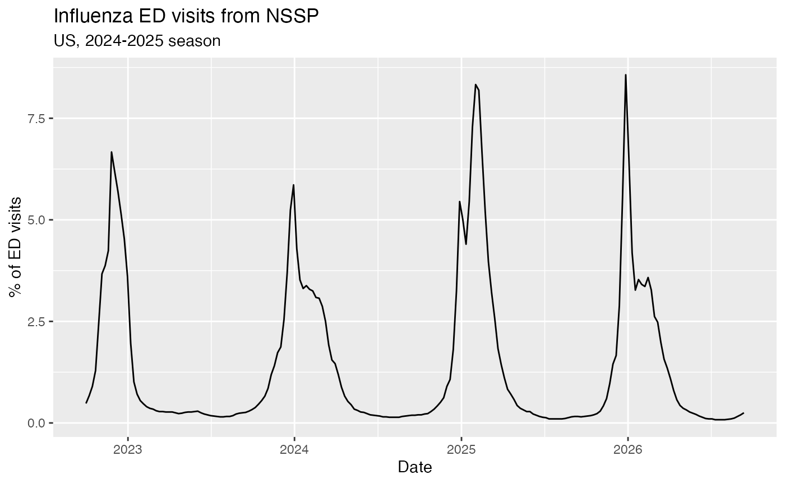
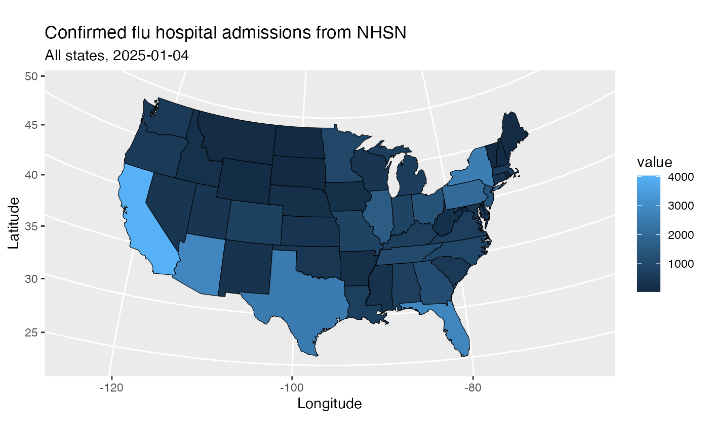
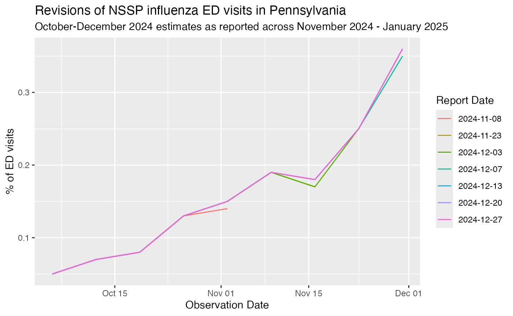

The epidatr package provides access to all the endpoints of the Delphi Epidata API, and can be used to make requests for specific signals on specific dates and in select geographic regions. It is widely used in epidemiological research, real-time forecasting models, and public health dashboards.
Setup
Installation
You can install the stable version of this package from CRAN:
# Install from CRAN
install.packages("epidatr")
# or using pak
pak::pkg_install("epidatr")
# or using renv
renv::install("epidatr")Or if you want the development version, install from GitHub:
# Install the dev version using pak
pak::pkg_install("cmu-delphi/epidatr@dev")
# or using remotes
remotes::install_github("cmu-delphi/epidatr", ref = "dev")
# or using renv
renv::install("cmu-delphi/epidatr@dev")API Keys
The Delphi API requires a (free) API key for full functionality. While most endpoints are available without one, there are limits on API usage for anonymous users, including a rate limit.
To generate your key, register
for a pseudo-anonymous account. See the save_api_key()
function documentation for details on how to set up epidatr
to use your API key.
The Delphi V5 API
Epidatr allows three categories of data access to the Delphi V5 API:
-
epidata_snapshot()provides a specific view of how a dataset looked at a point in time. -
epidata_archive()fetches all versions of a dataset across time, representing the full revision history. -
epidata_aux()accesses source-specific auxiliary tables containing metadata, laboratory protocols, or additional static keys (such as NWSS wastewater facility descriptions).
Additionally, epidata_meta() provides access to system
metadata to list available sources, signals, geographic granularities,
and date ranges.
Basic Usage
To make a request of a particular data source at a specific point in
time, we’ll use epidata_snapshot(). This function needs the
source name, signal name, and a geographic level in order to complete a
query.
Suppose we are interested in the nssp source, which
provides access to a wide
range of emergency department visits data:
library(epidatr)
library(dplyr)
#> Warning: package 'dplyr' was built under R version 4.5.2
#>
#> Attaching package: 'dplyr'
#> The following objects are masked from 'package:stats':
#>
#> filter, lag
#> The following objects are masked from 'package:base':
#>
#> intersect, setdiff, setequal, union
# Obtain the latest snapshot of the influenza ED-visit percentage
# from the NSSP source for the US
epidata <- epidata_snapshot(
source = "nssp",
signals = "pct_ed_visits_influenza",
geo_type = "nation"
)
knitr::kable(head(epidata))| signal | report_time | geo_type | geo_value | fill_method | reference_time | value |
|---|---|---|---|---|---|---|
| pct_ed_visits_influenza | 2026-06-26 | nation | us | source | 2022-10-01 | 0.48 |
| pct_ed_visits_influenza | 2026-06-26 | nation | us | source | 2022-10-08 | 0.67 |
| pct_ed_visits_influenza | 2026-06-26 | nation | us | source | 2022-10-15 | 0.90 |
| pct_ed_visits_influenza | 2026-06-26 | nation | us | source | 2022-10-22 | 1.29 |
| pct_ed_visits_influenza | 2026-06-26 | nation | us | source | 2022-10-29 | 2.47 |
| pct_ed_visits_influenza | 2026-06-26 | nation | us | source | 2022-11-05 | 3.67 |
epidata_snapshot() returns a tibble (a modern
reimagining of R’s standard data frame that prints cleanly and preserves
typed columns). (Here we’re using knitr::kable() to make it
more readable.) Each row represents one observation for the US on one
date. The location is given in the geo_value column, the
date it describes in the reference_time column, the value
of the requested signal in value, and the publication date
in report_time.
The Delphi V5 API makes signals available at different geographic
levels, depending on the source. Use epidata_meta("nssp")
for a given source to see which geo types it supports.
To request signals for all states instead of the entire US, we use
the geo_type argument. This automatically returns all
available data for that geo type:
# Obtain the latest snapshot of the influenza ED-visit percentage
# from the NSSP source across all available dates and states
epidata_snapshot(
source = "nssp",
signals = "pct_ed_visits_influenza",
geo_type = "state"
)
#> # A tibble: 10,557 × 7
#> signal report_time geo_type geo_value fill_method reference_time value
#> <chr> <date> <chr> <chr> <chr> <date> <dbl>
#> 1 pct_ed_visits… 2026-06-26 state ak source 2022-10-01 0.140
#> 2 pct_ed_visits… 2026-06-26 state ak source 2022-10-08 0.240
#> 3 pct_ed_visits… 2026-06-26 state ak source 2022-10-15 0.320
#> 4 pct_ed_visits… 2026-06-26 state ak source 2022-10-22 0.760
#> # ℹ 10,553 more rowsYou can also query multiple signals in a single request by passing a
vector to signals:
# Obtain both influenza and COVID-19 ED-visit percentages in a single query
epidata_snapshot(
source = "nssp",
signals = c("pct_ed_visits_influenza", "pct_ed_visits_covid"),
geo_type = "state",
geo_values = "pa",
reference_time = epirange("2024-12-01", "2024-12-15")
)
#> # A tibble: 4 × 7
#> signal report_time geo_type geo_value fill_method reference_time value
#> <chr> <date> <chr> <chr> <chr> <date> <dbl>
#> 1 pct_ed_visits… 2026-06-26 state pa source 2024-12-07 0.75
#> 2 pct_ed_visits… 2026-06-26 state pa source 2024-12-07 0.570
#> 3 pct_ed_visits… 2026-06-26 state pa source 2024-12-14 0.820
#> 4 pct_ed_visits… 2026-06-26 state pa source 2024-12-14 0.870Alternatively, we can fetch the time series for a subset of states
and reference dates by listing out the desired locations in the
geo_values argument and using a range in the
reference_time argument:
# Obtain the data from January 1st, 2024 to January 1st, 2025
# of the influenza ED-visit percentage from the NSSP source for
# Pennsylvania, California, and Florida
epidata_snapshot(
source = "nssp",
signals = "pct_ed_visits_influenza",
geo_type = "state",
geo_values = c("pa", "ca", "fl"),
reference_time = epirange("2024-01-01", "2025-01-01")
)
#> # A tibble: 156 × 7
#> signal report_time geo_type geo_value fill_method reference_time value
#> <chr> <date> <chr> <chr> <chr> <date> <dbl>
#> 1 pct_ed_visits… 2026-06-26 state ca source 2024-02-03 1.31
#> 2 pct_ed_visits… 2026-06-26 state ca source 2024-02-17 0.990
#> 3 pct_ed_visits… 2026-06-26 state ca source 2024-03-02 0.760
#> 4 pct_ed_visits… 2026-06-26 state ca source 2024-03-09 0.650
#> # ℹ 152 more rowsGetting versioned data
The Delphi V5 API stores a historical record of all data, including
corrections and updates, which is particularly useful for accurately
backtesting forecasting models. To retrieve versioned data in
epidata_snapshot(), we can use the
snapshot_date argument, which fetches the data as it was
known on a specific date.
# Obtain the influenza ED-visit percentage from NSSP for Pennsylvania
# as it was known on 2025-01-01
epidata_snapshot(
source = "nssp",
signals = "pct_ed_visits_influenza",
geo_type = "state",
geo_values = "pa",
snapshot_date = "2025-01-01"
)
#> # A tibble: 117 × 7
#> signal report_time geo_type geo_value fill_method reference_time value
#> <chr> <date> <chr> <chr> <chr> <date> <dbl>
#> 1 pct_ed_visits… 2024-12-27 state pa source 2022-10-01 0.120
#> 2 pct_ed_visits… 2024-12-27 state pa source 2022-10-08 0.100
#> 3 pct_ed_visits… 2024-12-27 state pa source 2022-10-15 0.210
#> 4 pct_ed_visits… 2024-12-27 state pa source 2022-10-22 0.330
#> # ℹ 113 more rowsTo request all versions of the data issued within a specific time
range, we use epidata_archive() with the
report_time argument. This parameter allows us to fetch
versions using comparison operators (e.g.,
"<2025-01-15>") or an epirange().
# See how the estimate for a SINGLE reference date (2024-12-07) evolved
# by fetching all reports issued in December 2024 and early January 2025
epidata_archive(
source = "nssp",
signals = "pct_ed_visits_influenza",
geo_type = "state",
geo_values = "pa",
reference_time = "2024-12-07",
report_time = epirange("2024-12-01", "2025-01-15")
)
#> # A tibble: 5 × 7
#> signal report_time geo_type geo_value fill_method reference_time value
#> <chr> <date> <chr> <chr> <chr> <date> <dbl>
#> 1 pct_ed_visits… 2024-12-13 state pa source 2024-12-07 0.550
#> 2 pct_ed_visits… 2024-12-20 state pa source 2024-12-07 0.560
#> 3 pct_ed_visits… 2024-12-27 state pa source 2024-12-07 0.560
#> 4 pct_ed_visits… 2025-01-03 state pa source 2024-12-07 0.560
#> # ℹ 1 more rowSee vignette("versioned-data") for details and more ways
to specify versioned data.
Auxiliary data
Some sources include extra columns connected to the signal data, such
as the population served by each NWSS sewershed or site metadata.
epidata_aux() retrieves this auxiliary data, either on its
own or merged onto a signal pull.
You can pull auxiliary data directly by source. To see what key
columns you can filter on for a given source, consult that source’s page
in the V5
signals documentation. Named filters on these key columns can be
passed through ... to limit the returned rows, and
columns can be used to select specific fields:
aux_data <- epidata_aux(
source = "nwss",
pcr_target = "sars-cov-2",
sample_index = c("92012", "92013")
)
knitr::kable(head(aux_data))| report_time | geo_value | reference_time | nwss_source | sample_index | pcr_target | report_ts_nominal_end | state_territory | county_fips | counties_served | population_served | sample_type | sample_matrix | sample_location | flow_rate | concentration_method | pasteurized | pcr_type | extraction_method | major_lab_method | inhibition_detect | inhibition_adjust | ntc_amplify | pcr_gene_target_agg | pcr_target_units | lod_sewage | hum_frac_target_mic | hum_frac_mic_conc | hum_frac_mic_unit | rec_eff_percent | rec_eff_target_name | rec_eff_spike_matrix | rec_eff_spike_conc | pipeline_run_id | report_ts_actual | comments |
|---|---|---|---|---|---|---|---|---|---|---|---|---|---|---|---|---|---|---|---|---|---|---|---|---|---|---|---|---|---|---|---|---|---|---|---|
| 2026-06-26 | 162 | 2026-01-27 | CDC_Verily | 92012 | sars-cov-2 | NA | ca | 06079 | San Luis Obispo | 14465 | 24-hr time-weighted composite | post grit removal | wwtp | 0.45 | ceres nanotrap | f | ddpcr | thermo magmax viral/pathogen nucleic acid isolation kit | 2 | f | f | f | n | copies/l wastewater | 1500 | pepper mild mottle virus | 153424325.78462 | copies/l wastewater | 40.7 | bcov vaccine | clarified sample | 5 | 7914 | 2026-06-26 21:04:11 | NA |
| 2026-06-19 | 162 | 2026-01-27 | CDC_Verily | 92012 | sars-cov-2 | 2026-06-26 00:00:00 | ca | 06079 | San Luis Obispo | 14465 | 24-hr time-weighted composite | post grit removal | wwtp | 0.45 | ceres nanotrap | f | ddpcr | thermo magmax viral/pathogen nucleic acid isolation kit | 2 | f | f | f | n | copies/l wastewater | 1500 | pepper mild mottle virus | 153424325.78462 | copies/l wastewater | 40.7 | bcov vaccine | clarified sample | 5 | 7895 | 2026-06-26 21:02:14 | NA |
| 2026-06-12 | 162 | 2026-01-27 | CDC_Verily | 92012 | sars-cov-2 | 2026-06-19 00:00:00 | ca | 06079 | San Luis Obispo | 14465 | 24-hr time-weighted composite | post grit removal | wwtp | 0.45 | ceres nanotrap | f | ddpcr | thermo magmax viral/pathogen nucleic acid isolation kit | 2 | f | f | f | n | copies/l wastewater | 1500 | pepper mild mottle virus | 153424325.78462 | copies/l wastewater | 40.7 | bcov vaccine | clarified sample | 5 | 7879 | 2026-06-26 21:00:39 | NA |
| 2026-06-05 | 162 | 2026-01-27 | CDC_Verily | 92012 | sars-cov-2 | 2026-06-12 00:00:00 | ca | 06079 | San Luis Obispo | 14465 | 24-hr time-weighted composite | post grit removal | wwtp | 0.45 | ceres nanotrap | f | ddpcr | thermo magmax viral/pathogen nucleic acid isolation kit | 2 | f | f | f | n | copies/l wastewater | 1500 | pepper mild mottle virus | 153424325.78462 | copies/l wastewater | 40.7 | bcov vaccine | clarified sample | 5 | 7868 | 2026-06-26 20:59:33 | NA |
| 2026-05-30 | 162 | 2026-01-27 | CDC_Verily | 92012 | sars-cov-2 | 2026-06-05 00:00:00 | ca | 06079 | San Luis Obispo | 14465 | 24-hr time-weighted composite | post grit removal | wwtp | 0.45 | ceres nanotrap | f | ddpcr | thermo magmax viral/pathogen nucleic acid isolation kit | 2 | f | f | f | n | copies/l wastewater | 1500 | pepper mild mottle virus | 153424325.78462 | copies/l wastewater | 40.7 | bcov vaccine | clarified sample | 5 | 7858 | 2026-06-26 20:58:46 | NA |
| 2026-05-29 | 162 | 2026-01-27 | CDC_Verily | 92012 | sars-cov-2 | 2026-05-30 00:00:00 | ca | 06079 | San Luis Obispo | 14465 | 24-hr time-weighted composite | post grit removal | wwtp | 0.45 | ceres nanotrap | f | ddpcr | thermo magmax viral/pathogen nucleic acid isolation kit | 2 | f | f | f | n | copies/l wastewater | 1500 | pepper mild mottle virus | 153424325.78462 | copies/l wastewater | 40.7 | bcov vaccine | clarified sample | 5 | 7847 | 2026-06-26 20:57:31 | NA |
You can also attach auxiliary columns directly to a signal pull by
passing the output of epidata_snapshot() or
epidata_archive() directly to epidata_aux().
In this workflow, epidata_aux() fetches the matching
auxiliary data and left-joins it onto the shared key columns:
# Fetch signal data for a specific sewershed
nwss_data <- epidata_snapshot(
source = "nwss",
signals = "covid_avg_conc",
geo_type = "sewershed",
geo_values = "128",
reference_time = epirange("2024-12-01", "2025-01-01")
)
head(nwss_data)
#> # A tibble: 6 × 10
#> signal report_time geo_type geo_value fill_method reference_time nwss_source
#> <chr> <date> <chr> <chr> <chr> <date> <chr>
#> 1 covid_a… 2026-06-26 sewersh… 128 source 2024-12-19 CDC_Verily
#> 2 covid_a… 2026-06-26 sewersh… 128 source 2024-12-03 CDC_Verily
#> 3 covid_a… 2026-06-26 sewersh… 128 source 2024-12-17 CDC_Verily
#> 4 covid_a… 2026-06-26 sewersh… 128 source 2024-12-12 CDC_Verily
#> # ℹ 2 more rows
#> # ℹ 3 more variables: sample_index <chr>, pcr_target <chr>, value <dbl>
# Attach auxiliary metadata
nwss_merged <- nwss_data %>%
epidata_aux()
head(nwss_merged)
#> # A tibble: 6 × 40
#> signal report_time geo_type geo_value fill_method reference_time nwss_source
#> <chr> <date> <chr> <chr> <chr> <date> <chr>
#> 1 covid_a… 2026-06-26 sewersh… 128 source 2024-12-19 CDC_Verily
#> 2 covid_a… 2026-06-26 sewersh… 128 source 2024-12-03 CDC_Verily
#> 3 covid_a… 2026-06-26 sewersh… 128 source 2024-12-17 CDC_Verily
#> 4 covid_a… 2026-06-26 sewersh… 128 source 2024-12-12 CDC_Verily
#> # ℹ 2 more rows
#> # ℹ 33 more variables: sample_index <chr>, pcr_target <chr>, value <dbl>,
#> # report_ts_nominal_end <chr>, state_territory <chr>, county_fips <chr>,
#> # counties_served <chr>, population_served <chr>, sample_type <chr>,
#> # sample_matrix <chr>, sample_location <chr>, flow_rate <chr>,
#> # concentration_method <chr>, pasteurized <chr>, pcr_type <chr>,
#> # extraction_method <chr>, major_lab_method <chr>, inhibition_detect <chr>, …If you don’t pass explicit key filters, epidata_aux()
automatically infers them from the base dataset.
Advanced queries
Server-side key filtering
Beyond standard arguments (source, signals,
geo_type), some sources include extra key dimensions that
categorize the data (for example, nwss categorizes by
pcr_target, and pophive categorizes by
age_group). To see what key columns are available per
source, consult that source’s page in the V5
signals documentation. You can pass these extra dimensions directly
as named parameters to filter the query server-side:
epidata_snapshot(
source = "nwss",
signals = "pcr_conc_smoothed",
geo_type = "county",
pcr_target = c("sars-cov-2", "influenza")
)Dry runs
If you want to inspect the generated API request URL underlying each
function query without actually fetching data, you can pass
dry_run = TRUE via fetch_args_list(). This
works with epidata_snapshot(),
epidata_archive(), and epidata_aux():
dry_run_call <- epidata_snapshot(
source = "nssp",
signals = "pct_ed_visits_influenza",
geo_type = "state",
fetch_args = fetch_args_list(dry_run = TRUE)
)
dry_run_call
#>
#> ── <epidata_call> object: ──────────────────────────────────────────────────────
#> • Pipe this object into `fetch()` to actually fetch the data
#> • Request URL:
#> https://delphi.cmu.edu/epidata/v5/snapshot/?source=nssp&signal=pct_ed_visits_influenza&geo_type=statePlotting
Because the output data is in a standard tibble format,
we can easily plot it using ggplot2:
library(ggplot2)
#> Warning: package 'ggplot2' was built under R version 4.5.2
# Plot the influenza ED-visit time series fetched earlier with epidata_snapshot()
ggplot(epidata, aes(x = reference_time, y = value)) +
geom_line() +
labs(
title = "Influenza ED visits from NSSP",
subtitle = "US, 2024-2025 season",
x = "Date",
y = "% of ED visits"
)
plot of chunk unnamed-chunk-12
ggplot2 can also be used with epidatr and
maps to create
choropleths:
library(epidatr)
library(dplyr)
library(ggplot2)
library(maps)
# Obtain the latest snapshot of confirmed flu hospital admissions
# from NHSN for all states on a single reference date
nhsn_states <- epidata_snapshot(
source = "nhsn",
signals = "confirmed_admissions_flu_ew",
geo_type = "state",
geo_values = "*",
reference_time = "2025-01-04"
)
# Get a mapping of states to longitude/latitude coordinates
states_map <- map_data("state")
# Convert state abbreviations into state names
nhsn_states <- mutate(
nhsn_states,
state = ifelse(
geo_value == "dc",
"district of columbia",
state.name[match(geo_value, tolower(state.abb))] %>% tolower()
)
)
# Add coordinates for each state
nhsn_states <- left_join(states_map, nhsn_states, by = c("region" = "state"))
# Plot
ggplot(nhsn_states, aes(x = long, y = lat, group = group, fill = value)) +
geom_polygon(colour = "black", linewidth = 0.2) +
coord_map("polyconic") +
labs(
title = "Confirmed flu hospital admissions from NHSN",
subtitle = "All states, 2025-01-04",
x = "Longitude",
y = "Latitude"
)
plot of chunk unnamed-chunk-13
Plotting revision histories
We can also visualize revision histories from
epidata_archive(). Each line shows what the time series
looked like as of a different publication date:
# Fetch revision history for Pennsylvania influenza ED visits
pa_revisions <- epidata_archive(
source = "nssp",
signals = "pct_ed_visits_influenza",
geo_type = "state",
geo_values = "pa",
reference_time = epirange("2024-10-01", "2024-12-01"),
report_time = epirange("2024-11-01", "2025-01-01")
)
ggplot(pa_revisions, aes(x = reference_time, y = value, group = report_time, color = as.factor(report_time))) +
geom_line() +
labs(
title = "Revisions of NSSP influenza ED visits in Pennsylvania",
subtitle = "October-December 2024 estimates as reported across November 2024 - January 2025",
x = "Observation Date",
y = "% of ED visits",
color = "Report Date"
)
plot of chunk archive-plot
Available data sources and endpoints
epidatr provides access to a broad ecosystem of
epidemiological data streams:
-
V5 sources provide access to active surveillance
data queried via
epidata_snapshot()andepidata_archive(). Discover them programmatically usingepidata_meta()or interactively on the Delphi EpiPortal. -
Migrating endpoints are legacy endpoints (such as
pub_covidcast(),pub_fluview(),pub_flusurv(), andpub_meta()) transitioning to V5. Seevignette("migration-guide")for argument mappings and migration details. -
Historical endpoints provide access to datasets
whose collection has ended (such as Google Flu Trends, Wikipedia article
views, and historical hospitalization series) kept for retrospective
analysis via
pub_*functions.-
International endpoints are a subset of historical
datasets that focus on surveillance outside the United States (e.g.,
PAHO dengue with
pub_paho_dengue()and ECDC ILI withpub_ecdc_ili()). -
Private endpoints are restricted streams (e.g., CDC
web metrics with
pvt_cdc()and digital sensors withpvt_sensors()) that require dedicated secret authentication keys.
-
International endpoints are a subset of historical
datasets that focus on surveillance outside the United States (e.g.,
PAHO dengue with
See vignette("signal-discovery") for an in-depth guide
to discovering signals, browsing metadata, and querying datasets across
all these categories.